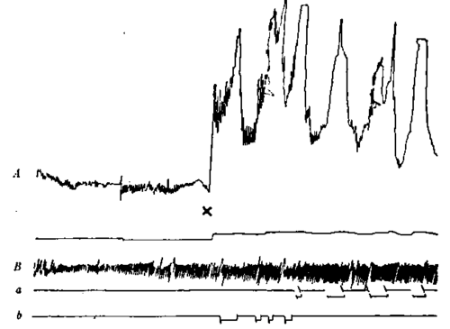

II. Origin Of The Hunger Sensation. Part 3
Description
This section is from the book "The Control Of Hunger In Health And Disease", by Anton Julius Carlson. Also available from Amazon: The Control of Hunger in Health and Disease.
II. Origin Of The Hunger Sensation. Part 3
The stomach contractions give rise to the hunger sensations.-The consideration of the cause of the gastric hunger contractions will be taken up later, but the simpler question of the action of the contractions may be briefly dealt with now. Assuming, for the present, that the stomach contractions give rise to the hunger sensations through the action of afferent nerves from the stomach, in what way does the contraction act as a stimulus to these nerves ? Does the hunger sensation arise (1) from the stimulation of nerves in the mucosa; (2) from the stimulation of nerves in the muscular coats and in the connective tissue; or (3) is it due to an inter-central discharge from the Auerbach's plexus to the brain, associated with the motor discharge from the same plexus to the stomach musculature ?
As regards the first possibility, the following experiments have been made, with negative results. It would seem that the only way in which contraction of the stomach musculature can stimulate nerve-endings in the mucosa is by mechanical pressure. This may be imitated in the following way on Mr. V. During the period of relative quiescence of the stomach between two periods of strong hunger, when the afferent nerves concerned are in such condition that their stimulation will give rise to hunger, mechanical pressure on the mucosa by distension of the balloon or rubbing the mucosa by the closed end of a test tube never causes sensations of hunger unless these procedures lead to contractions. Mr. V. always stated that he felt these pressures, but the sensations were not like hunger. The objection might be raised against these experiments that the pressure is not sufficiently strong, and, in the case of the test tube, does not touch a sufficiently large area of the mucosa. We admit that a more intense mechanical stimulation of the mucosa could be produced by Pavlov's method on dogs of blowing sand into the stomach by bellows. But we have not felt justified in using similar procedures on Mr. V. The methods used do not, of course, produce the strongest possible mechanical stimulation of the mucosa, but these stimulations were sufficient to affect consciousness. They were perceived, but not as hunger sensations. It seems, therefore, highly probable that the afferent nerves in the mucosa are not primarily concerned in the genesis of the hunger sense. They are, however, concerned in the inhibition of hunger.
The hunger sensation seems to be produced by the contractions only. When the empty stomach is normal, strong contractions, however caused, produced a sensation of hunger. Thus, if the balloon in the stomach is rather suddenly distended, this may produce one, two, or three strong contractions of the previously quiescent stomach, and these are recognized as hunger contractions identical with those of the "spontaneous" hunger periods. It seems to us that this experiment constitutes a demonstration of the peripheral genesis of hunger, as the subjective state clearly is induced by the peripheral change. A tracing illustrating this phenomena is reproduced in Fig. 12.
But how do the contractions stimulate the afferent nerves in the muscle layers? Contraction in skeletal muscle stimulates afferent nerve fibers in the muscle. But it seems to us that the pain experienced from contractures or "cramps" in skeletal muscles and in the intestines in the case of colic or tenesmus is somewhat different from the hunger pangs, even though pain is inherent in hunger. The difference may be only an apparent one, due to the fact that the latter pains arouse the memories of previous agreeable experiences with food. Because of the folding of the mucosa and the submucosa into rugae and the changes in the arrangement of the cells in the muscle layers in the stomach during contractions, there must be a great variation in tension on the nerve-fibers in the contracted and in the relaxed condition of the stomach walls. This variation in tension, rather than actual pressure, may constitute the stimulus, so far as the stimulus is a mechanical one. Hunger, therefore, contains elements of kinesthetic sensation as well as pain, the latter predominating in strong hunger.
We have been strongly impressed by Mr. V.'s ability to recognize feeble stomach contractions as hunger states. Very strong stomach contractions can be recognized as separate hunger pangs by most people, but there are great individual variations in the ability to recognize each individual contraction, unless the contractions are very strong.
Fig. 12.-Two-thirds the original size. A, stomach contractions; B, respiratory movements; a, b, signals for moderate and strong hunger respectively. The pressure in the balloon is slight. There is no evidence of strong stomach contractions,and Mr. V. feels no hunger. At x the pressure in the balloon is suddenly increased. This distension of the balloon initiates a few strong stomach contractions, which in tum cause the hunger states. A demonstration of the gastric genesis of hunger.
Two explanations of Mr. V.'s unusual ability in recognizing the stomach activities have occurred to the writer. Since early boyhood the stomach has been to Mr. V. the object of special care and attention. In consequence of such special attention to the stomach the afferent nervous impulses from the stomach may attain a clearer definition in consciousness analogous to the remarkable development of analysis in the tactile or pressure senses in the absence of vision. That this type of education or training does take place, the author is satisfied from his own experience during the four years that he has studied the hunger mechanism on himself. At the point of the gastrostomy Mr. V.'s stomach adheres to the parietal peritoneum. There may be adhesions of greater extent in consequence of the operation. The hunger sensation of Mr. V. may therefore include a greater degree of pain than is the case in normal men, as the contracting stomach may pull on the parietal peritoneum, which, according to many observers, is very sensitive to painful stimuli. The weaker stomach contractions may thus be recognized as hunger because more painful than under normal conditions. Confirmatory evidence (or the opposite) ought to be obtainable without much difficulty, as cases of gastrostomy are fairly common. Clinicians having such cases in hand would do a service to physiology if they could determine whether gastrostomy invariably augments the hunger sensations or makes the hunger pangs more painful.
We have shown that in all animals so far studied the empty or partly empty stomach exhibits the tonus and contractions which in man give rise to the hunger sensation. There are some differences in these contractions in different species, but these are probablyof minor importance. Manknows that a sensation of strong hunger is felt synchronously with the strong contraction. We have a right to conclude that the lower animals experience the same sensation simultaneously with the corresponding contraction. We have, then, in the tonus and contractions of the empty stomach an objective criterion for the presence or absence of hunger in experimental animals in normal health.
Continue to:
- prev: II. Origin Of The Hunger Sensation. Part 2
- Table of Contents
- next: III. The Esophagus And The Cardia In Hunger. 1. Methods Of Investigation